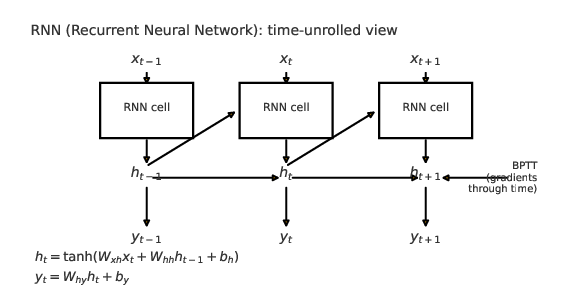
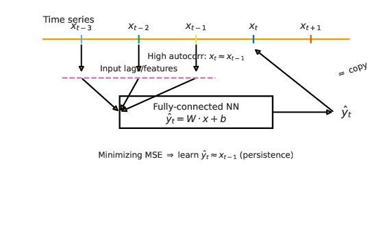

LSTMと時系列データ処理
目次
1. python基本文法
時系列データの多くはpandasというライブラリを使って扱われる
1: # pip3 install pandas 2: import pandas as pd 3: 4: # 辞書からDataFrameを作成 5: data = { 6: "名前": ["Alice", "Bob", "Charlie", "David"], 7: "年齢": [24, 30, 18, 35], 8: "点数": [85, 92, 78, 88] 9: } 10: 11: df = pd.DataFrame(data) 12: print(df) 13: 14: # 名前 年齢 点数 15: #0 Alice 24 85 16: #1 Bob 30 92 17: #2 Charlie 18 78 18: #3 David 35 88
sin波をpandasのデータとして格納
1: import numpy as np 2: import pandas as pd 3: time = np.arange(0, 200, 0.1) 4: data = np.sin(time) + 0.1 * np.random.randn(len(time)) # sin波+ノイズ 5: 6: df = pd.DataFrame({"time": time, "value": data}) 7: df.set_index("time", inplace=True) 8: 9: import matplotlib.pyplot as plt 10: df.plot() 11: plt.show()
2. リカレントニューラルネットワーク
リカレントニューラルネットワーク(RNN)

図1: RNN の時間展開と BPTT のイメージ
BPTT(Backpropagation Through Time)とは
3. sin関数をニューラルネットに学習させてみる
1: import numpy as np 2: import pandas as pd 3: import torch 4: import torch.nn as nn 5: from torch.utils.data import Dataset, DataLoader 6: import matplotlib.pyplot as plt 7: 8: # ==== 1. ダミー時系列データを作る（sin波） ==== 9: np.random.seed(0) 10: time = np.arange(0, 200, 0.1) 11: data = np.sin(time) + 0.1 * np.random.randn(len(time)) # sin波+ノイズ 12: 13: df = pd.DataFrame({"time": time, "value": data}) 14: df.set_index("time", inplace=True) 15: 16: # ==== 2. 学習・テスト分割 ==== 17: train_size = int(len(df) * 0.8) 18: train_series = df.iloc[:train_size]["value"] 19: test_series = df.iloc[train_size:]["value"] 20: 21: SEQ_LEN = 20 ##この変数の意味？ 22: 23: class TimeSeriesDataset(Dataset): 24: def __init__(self, series, seq_len=20): 25: self.series = torch.tensor(series.values, dtype=torch.float32) 26: self.seq_len = seq_len 27: 28: def __len__(self): 29: return len(self.series) - self.seq_len 30: 31: def __getitem__(self, idx): 32: x = self.series[idx:idx+self.seq_len].unsqueeze(-1) # (seq_len,1) 33: y = self.series[idx+self.seq_len] 34: return x, y 35: 36: train_dataset = TimeSeriesDataset(train_series, SEQ_LEN) 37: test_dataset = TimeSeriesDataset(test_series, SEQ_LEN) 38: 39: train_loader = DataLoader(train_dataset, batch_size=32, shuffle=True) 40: 41: # ==== 3. LSTMモデル定義 ==== 42: class LSTMModel(nn.Module): 43: def __init__(self, input_size=1, hidden_size=50, num_layers=1): 44: super().__init__() 45: self.lstm = nn.LSTM(input_size, hidden_size, num_layers, 46: batch_first=True ###ここに注意 47: ) 48: self.fc = nn.Linear(hidden_size, 1) ###ここの意味は？ 49: 50: def forward(self, x): 51: out, _ = self.lstm(x) 52: out = out[:, -1, :] # 最後の時点だけ出力する 53: out = self.fc(out) 54: return out.squeeze() 55: 56: model = LSTMModel() 57: criterion = nn.MSELoss() 58: optimizer = torch.optim.Adam(model.parameters(), lr=0.01) ##Adamになっているのに注意 59: 60: # ==== 4. 学習 ==== 61: EPOCHS = 10 62: for epoch in range(EPOCHS): 63: for x, y in train_loader: 64: optimizer.zero_grad() 65: pred = model(x) 66: loss = criterion(pred, y) 67: loss.backward() 68: optimizer.step() 69: print(f"Epoch {epoch+1}/{EPOCHS}, Loss: {loss.item():.4f}") 70: 71: # ==== 5. テストデータで予測 ==== 72: model.eval() #ここも注意 73: preds = [] 74: with torch.no_grad(): #ここも注意 75: for i in range(len(test_dataset)): 76: x, _ = test_dataset[i] 77: x = x.unsqueeze(0) # (1, seq_len, 1) 78: pred = model(x).item() 79: preds.append(pred) 80: 81: # ==== 6. グラフ表示 ==== 82: plt.figure(figsize=(12,6)) 83: plt.plot(test_series.index[SEQ_LEN:], test_series.values[SEQ_LEN:], label="True", color="blue") 84: plt.plot(test_series.index[SEQ_LEN:], preds, label="Predicted", color="red") 85: plt.title("LSTM Prediction vs True values") 86: plt.xlabel("Time") 87: plt.ylabel("Value") 88: plt.legend() 89: plt.show()
4. googleトレンドをニューラルネットに学習させてみる
以下は日経225という単語のgoogleトレンドをニューラルネットに学生させる例。
うまくいかない場合は
をダウンロードして使うか、KEYWORDを違うものに変える。
ナスダックの株価について同様のことを行う例もコメントアウトされているので、それも試してみる。
1: 2: # ========================= 3: # 1) ライブラリ 4: # ========================= 5: # pip3 install pytrends torch matplotlib pandas scikit-learn 6: 7: from pytrends.request import TrendReq 8: import pandas as pd 9: import numpy as np 10: import matplotlib.pyplot as plt 11: 12: import torch 13: import torch.nn as nn 14: from torch.utils.data import Dataset, DataLoader 15: from sklearn.preprocessing import StandardScaler 16: 17: 18: 19: # ========================= 20: # 2) Googleトレンドからデータ取得 21: # ========================= 22: #KEYWORD = "Bitcoin" # ←好きな単語に変更（日本語OK） 23: KEYWORD = "日経225" # ←好きな単語に変更（日本語OK） 24: 25: GEO = "JP" # 地域（"JP","US",""=全世界 など） 26: TIMEFRAME = "today 5-y" # 期間（例: "today 12-m", "today 5-y", "2019-01-01 2025-10-01"） 27: 28: pytrends = TrendReq(hl='ja-JP', tz=540) # 日本時間 29: pytrends.build_payload([KEYWORD], timeframe=TIMEFRAME, geo=GEO) 30: df_trend = pytrends.interest_over_time() 31: 32: df_trend.to_csv('trend.csv') 33: 34: ##### googleトレンドが反応ない場合はこれに切り替える 35: #df_trend=pd.read_csv('trend.csv', index_col=0) 36: #df_trend.index=pd.to_datetime(df_trend.index) 37: 38: # 取得結果の整形 39: if df_trend.empty: 40: raise ValueError("Googleトレンドからデータが取得できませんでした。キーワード/期間/地域を見直してください。") 41: 42: # isPartial列を削除して、欠損を前方埋め 43: series = df_trend[KEYWORD].copy() 44: series = series.asfreq(series.index.inferred_freq) if series.index.inferred_freq else series 45: #print(series) 46: 47: 48: ##### googleトレンドではなく株価も同様に処理できる 49: #import yfinance as yf 50: #ticked = yf.Ticker("^NDX") 51: ###hist = ticked.history(period="100d",interval="1d") 52: #hist = ticked.history(period="max",interval="1d") 53: #series=hist['Close'] 54: ##print(series) 55: 56: 57: series = series.ffill() 58: series.name = "value" 59: 60: 61: # ========================= 62: # 3) 前処理（標準化＆学習/テスト分割） 63: # ========================= 64: # 学習80% / テスト20% 65: n = len(series) 66: train_size = int(n * 0.8) 67: train_idx_end = train_size 68: 69: train_series = series.iloc[:train_idx_end] 70: test_series = series.iloc[train_idx_end:] 71: 72: #print(train_series.shape) 73: #print(test_series.shape) 74: 75: 76: # 標準化（学習データでfit → 両方にtransform） 77: scaler = StandardScaler() 78: train_vals = scaler.fit_transform(train_series.values.reshape(-1, 1)).flatten() 79: test_vals = scaler.transform(test_series.values.reshape(-1, 1)).flatten() 80: 81: # ========================= 82: # 4) PyTorch Dataset 83: # ========================= 84: SEQ_LEN = 24 # 1ステップ予測用の履歴長（週次なら~半年、日次なら約1ヶ月） 85: 86: #### 以前に使ったTimeSeriesDataset(Dataset)との違いに注目(やっていることはほぼ同じだけど、もし後で拡張しようとすると) 87: class SeqDataset(Dataset): 88: def __init__(self, arr, seq_len=24): 89: self.x = [] 90: self.y = [] 91: for i in range(len(arr) - seq_len): 92: self.x.append(arr[i:i+seq_len]) 93: self.y.append(arr[i+seq_len]) 94: self.x = torch.tensor(np.array(self.x), dtype=torch.float32).unsqueeze(-1) # (N, seq_len, 1) 95: self.y = torch.tensor(np.array(self.y), dtype=torch.float32) # (N,) 96: 97: def __len__(self): 98: return len(self.y) 99: 100: def __getitem__(self, idx): 101: return self.x[idx], self.y[idx] 102: 103: train_ds = SeqDataset(train_vals, SEQ_LEN) 104: test_ds = SeqDataset(test_vals, SEQ_LEN) 105: 106: train_loader = DataLoader(train_ds, batch_size=32, shuffle=True) 107: 108: ##ここは以前と同じ 109: class LSTMModel(nn.Module): 110: def __init__(self, input_size=1, hidden_size=50, num_layers=1): 111: super().__init__() 112: self.lstm = nn.LSTM(input_size, hidden_size, num_layers, 113: batch_first=True ###ここに注意 114: ) 115: self.fc = nn.Linear(hidden_size, 1) ###ここの意味は？ 116: def forward(self, x): 117: out, _ = self.lstm(x) # (B, T, H) 118: out = out[:, -1, :] # 最後の時点だけ出力する 119: out = self.fc(out) # (B, 1) 120: return out.squeeze() # (B,) 121: 122: 123: 124: device = torch.device("cuda" if torch.cuda.is_available() else "cpu") 125: model = LSTMModel(hidden_size=64, num_layers=1).to(device) 126: 127: criterion = nn.MSELoss() 128: optimizer = torch.optim.Adam(model.parameters(), lr=1e-3) ##Adamになっているのに注意 129: 130: # ========================= 131: # 6) 学習 132: # ========================= 133: EPOCHS = 15 134: model.train() 135: for epoch in range(EPOCHS): 136: epoch_loss = 0.0 137: for x, y in train_loader: 138: x = x.to(device) 139: y = y.to(device) 140: 141: optimizer.zero_grad() 142: pred = model(x) 143: loss = criterion(pred, y) 144: loss.backward() 145: optimizer.step() 146: epoch_loss += loss.item() * x.size(0) 147: 148: print(f"Epoch {epoch+1}/{EPOCHS} loss={epoch_loss/len(train_ds):.4f}") 149: 150: # ========================= 151: # 7) テストデータで 1ステップ予測 152: # ========================= 153: model.eval() 154: pred_scaled = [] 155: with torch.no_grad(): 156: for i in range(len(test_ds)): 157: x, _ = test_ds[i] 158: x = x.unsqueeze(0).to(device) # (1, T, 1) 159: yhat = model(x).cpu().item() 160: pred_scaled.append(yhat) 161: 162: # 逆標準化（スカラーに対して inverse_transform を使えるように2次元化） 163: pred_scaled_arr = np.array(pred_scaled).reshape(-1, 1) 164: pred_inv = scaler.inverse_transform(pred_scaled_arr).flatten() 165: 166: 167: # 真値（テスト部分のうち、SEQ_LEN 以降が予測対象） 168: true_inv = test_series.values[SEQ_LEN:] 169: 170: # 対応するインデックス 171: plot_index = test_series.index[SEQ_LEN:] 172: 173: # ========================= 174: # 8) プロット（真値 vs 予測） 175: # ========================= 176: plt.figure(figsize=(12, 6)) 177: plt.plot(plot_index, true_inv, label="True") 178: plt.plot(plot_index, pred_inv, label="Predicted") 179: plt.title(f"Google Trends: {KEYWORD} — LSTM Prediction vs True") 180: plt.xlabel("Date") 181: plt.ylabel("Trend index (0–100)") 182: plt.legend() 183: plt.tight_layout() 184: plt.show() 185: 186: # ========================= 187: # 9)（おまけ）数ステップ先の再帰予測（テスト末尾から先へ） 188: # ========================= 189: # 直近の実データ（学習+テストの最後のSEQ_LEN点）を使って、kステップ先まで再帰的に予測 190: K_STEPS = 12 191: hist_full = scaler.transform(series.values.reshape(-1,1)).flatten() 192: window = hist_full[-SEQ_LEN:].copy() 193: 194: future_scaled = [] 195: model.eval() 196: with torch.no_grad(): 197: for _ in range(K_STEPS): 198: xin = torch.tensor(window, dtype=torch.float32).view(1, SEQ_LEN, 1).to(device) 199: yhat = model(xin).cpu().item() 200: future_scaled.append(yhat) 201: # 窓を1つ進める 202: window = np.concatenate([window[1:], [yhat]]) 203: 204: future = scaler.inverse_transform(np.array(future_scaled).reshape(-1,1)).flatten() 205: future_index = pd.date_range(series.index[-1], periods=K_STEPS+1, freq=series.index.inferred_freq)[1:] 206: 207: plt.figure(figsize=(12, 4)) 208: plt.plot(series.index[-100:], series.values[-100:], label="History (last 100)") 209: plt.plot(future_index, future, label=f"Recursive forecast (+{K_STEPS})") 210: plt.title(f"Google Trends: {KEYWORD} — Recursive Forecast") 211: plt.xlabel("Date") 212: plt.ylabel("Trend index (0–100)") 213: plt.legend() 214: plt.tight_layout() 215: plt.show() 216:
5. ラグ特徴のコピー現象
強い自己相関を持つ時系列を単純な全結合ニューラルネットで学習すると， 前回値をそのままコピーするような予測をしてしまう。

図2: 単純なラグ特徴を単純なNNが「コピー」してしまう仕組み
6. 演習
- 適当なpandasで保存したデータをファイルに保存して、再度ファイルから読み込んで同じデータが入っているか確認せよ（ヒント https://note.nkmk.me/python-pandas-to-pickle-read-pickle/ ）。
- 自分が興味ある単語のgoogleトレンドを学習させてみよう
- 「kステップ先まで再帰的に予測」の部分で再帰的な計算がなぜ必要なのか考察せよ
- 学習したニューラルネットワークをファイルに保存して、再度ファイルから読み込んで、同じ予測結果となることを確認せよ(ヒント state_dict の保存について調べよ https://docs.pytorch.org/tutorials/beginner/saving_loading_models.html )。
7. 課題
- LSTMの数式を良く見て input_size=1, hidden_size=50, num_layers=1 がどれでに対応しているのか理解せよ。
- df_trend は一日ごとにデータがまとめられているが、一週間ごとのデータに変換してみよ
- 複数の単語のgoogleトレンドを学習させてみよう。例えば「高専」「大学」の２つのトレンドから「高専」のトレンドを予測させる。
- 複数の入力があるLSTMが、どれをを重視しているのか調べてみよう。例えば「高専」「大学」の２つのトレンドから「高専」のトレンドを予測させる場合に、どちらからの入力が重要とみなされているか？学習したニューラルネットの重みを見ればわかるはずだが、この重みを取り出すプログラムはどう作る？(ヒント)
8. 発展課題
- LSTMのpytochのドキュメント を見るとLSTM以外にもGRUや、RNNなど様々なユニットがが見える。これらについて調べて、実際にユニットを組み合わせて動かしてみよう。
- Transformer というユニットはChatGPTのメインとなる構成部品となっている。これについて調べてよ。実際に動かしてみよう。LSTMなどと組み合わせた構成も試してみよ。
- 様々な株の15分足 http://10.133.2.200/ai/out.csv.zip を使って、ナスダック100が翌日に値上がりするか値下がりするか予想するプログラムをLSTMを使って作成せよ。